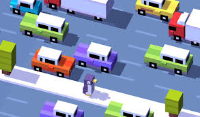

Crossy Road is an arcade video game released on 20 November 2014. It was developed and published by Hipster Whale, with the name and concept of the game playing on the age old joke "Why did the chicken cross the road?"[2] The game has been described as "endless Frogger.
The objective of Crossy Road is to cross an endless highway or series of roads and avoid obstacles as far as possible without dying. The player plays as a chosen character and must tap to go forward or swipe the screen in the appropriate direction to move the character horizontally. The game consists of an endless series of obstacles in a set path, such as rivers, cars and trains. The player must time movements correctly in order to pass these obstacles without dying. For example, in the instance of a river, the player must cross the river using floating logs, without landing in the water.
